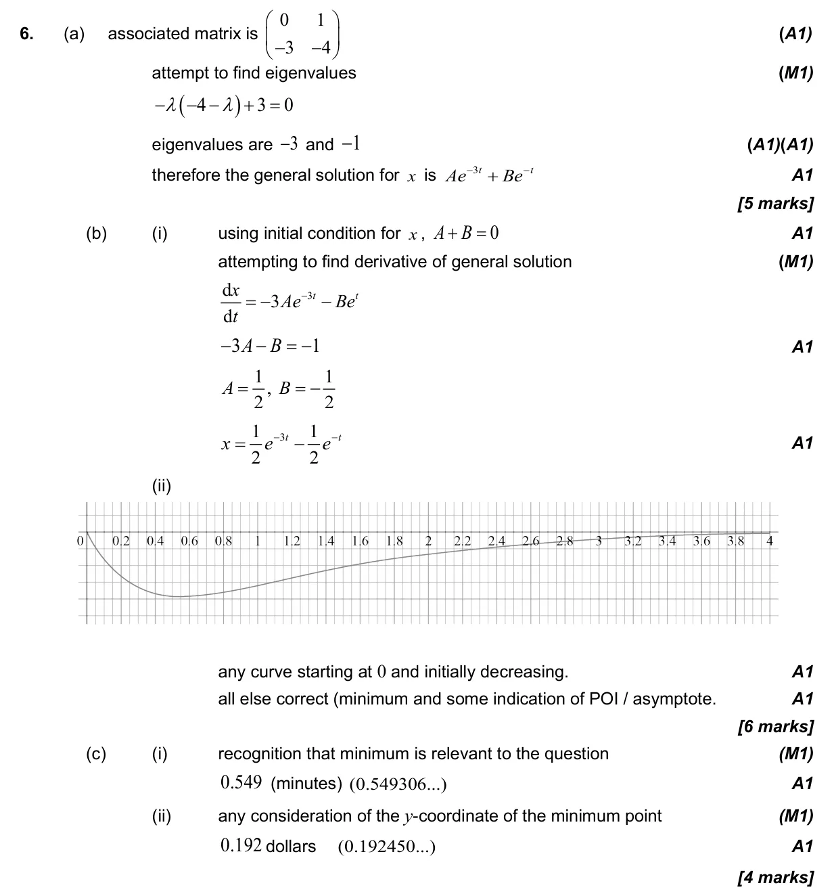
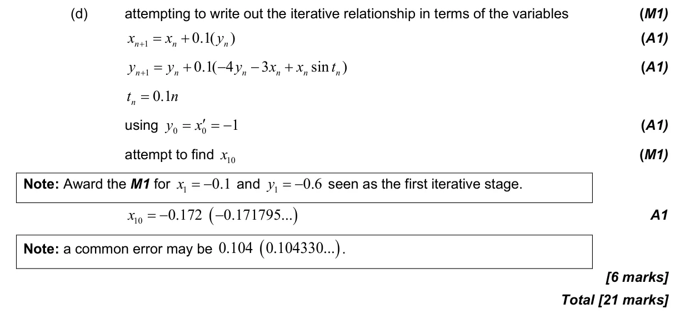

21 marks P2 TZ2 Calculator 5.18 Second-order differential equations by Euler's method5.17 Phase portraits for coupled linear differential equations5.7 Optimisation in context1.15 Eigenvalues, eigenvectors and diagonalisation of 2 × 2 matrices Question Hide breakdown abcd Markscheme 